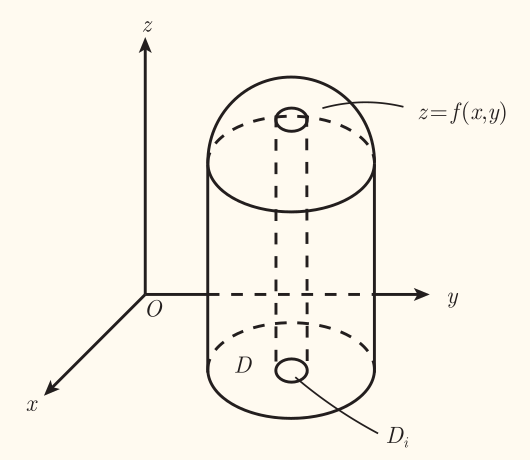
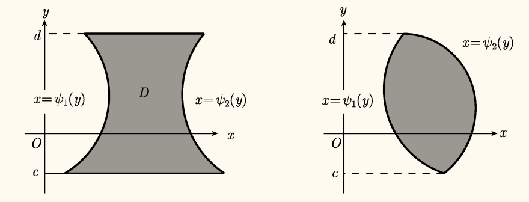

定义

类似曲边梯形的概念，将区域 D 任意分割成 n 个子区域 Di（i=1⋃nDi=D,i=1⋂nDi∘=∅），Di 面积记作 Δσi（Δσi=σ(Di)），λ 记作 Di 直径的最大值（λ=max{d(Di)}），称为分割的模，有曲顶柱体体积公式
V=λ→0limi=1∑nf(ξi,ηi)Δσi,(ξi,ηi)∈Di
从而有二重积分的定义（假设极限存在）：设二元函数 z=f(x,y) 在平面有界区域 D 上有定义，则记黎曼和的极限
∬Df(x,y)dσ=λ→0limi=1∑nf(ξi,ηi)Δσi
若极限存在，称 f(x,y) 在区域 D 上黎曼可积，称此极限为 f(x,y) 在 D 上的二重积分，记作 ∬Df(x,y)dσ。其中 f(x,y) 称为被积函数，D 称为积分区域，dσ 称为面积微元。
类似地，设有一质量不均的平面薄片 D，各点 (x,y) 的质量面密度为 μ(x,y)，则平面薄片的质量为
m=∬Dμ(x,y)dσ
性质
设函数 f(x,y) 在有界闭区域 D 上连续，则函数 f(x,y) 在 D 上可积。
设函数 f(x,y) 在有界闭区域 D 上有界，f(x,y) 的间断点分布在 D 内有限条光滑曲线上，则函数 f(x,y) 在 D 上可积。
勒贝格定理（Lebesgue 定理）
设函数 f(x,y) 在有界闭区域 D 上有界，则 f 可积当且仅当 f 的间断点集为零测集。
设 D⊂R2 为有界闭区域，下面各式被积函数在 D 上均可积，则有：
- ∬Ddσ=σ(D)（D 的面积）
- ∬Dkdσ=k∬Ddσ（k∈R）
- ∬D(f(x,y)±g(x,y))dσ=∬Df(x,y)dσ±∬Dg(x,y)dσ
- 对积分区域 D 的分割不变性：若 i=1⋃nDi=D,i=1⋂nDi∘=∅（且 Di 为闭区域），则 ∬Df(x,y)dσ=i=1∑n∬Dif(x,y)dσ
- 保向性：若 f(x,y)⩽g(x,y),∀(x,y)∈D，则 ∬Df(x,y)dσ⩽∬Dg(x,y)dσ
- 均值性质：(x,y)∈Dminf(x,y)⩽σ(D)1∬Df(x,y)dσ⩽(x,y)∈Dmaxf(x,y)
- 绝对值性质：∬Df(x,y)dσ⩽∬D∣f(x,y)∣dσ
- 对称性质：设 D 关于 x=0 对称，若 f(x,y) 关于 x 为奇函数，则 ∬Df(x,y)dσ=0；若 f(x,y) 关于 x 为偶函数，则 ∬Df(x,y)dσ=2∬D+f(x,y)dσ（D+ 为 D 的上半部分，即 D 中 x⩾0 的部分）
- 轮换对称性：将被积函数的变量与积分区域中相应变量替换，积分值不变（α-变换？串台了）
中值定理 1
设 D⊂R2 为有界闭区域，函数 f(x,y),g(x,y) 在 D 上连续，且 ∀(x,y)∈D,g(x,y)⩾0（或 ⩽0），则存在 (ξ,η)∈D 使得
∬Df(x,y)g(x,y)dσ=f(ξ,η)∬Dg(x,y)dσ
特别地，取 g(x,y)≡1，则有
中值定理 2
设 D⊂R2 为有界闭区域，函数 f(x,y) 在 D 上连续，则存在 (ξ,η)∈D 使得
∬Df(x,y)dσ=f(ξ,η)⋅σ(D)
计算
鉴于二重积分定义中结果与分割方式无关，通常可取通常可取平行于 x 轴和 y 轴的直线将 D 分割为 n 个小闭区域，从而有 Δσi=ΔxiΔyi，面积微元常记为 dσ=dxdy，称为直角坐标下的面积微元，f(x,y) 在区域 D 上的二重积分可表示为
∬Df(x,y)dxdy
考虑含参变量的定积分
σ1(x)σ2(x)=∫cdf(x,y)dy=∫φ1(x)φ2(x)f(x,y)dy
设函数 f(x,y) 在闭区域
D={(x,y)∣a⩽x⩽b,c⩽y⩽d}
上连续，则含参定积分
σ1(x)=∫cdf(x,y)dy(1)
在区间 [a,b] 上连续。
设函数 φ1(x),φ2(x) 在区间 [a,b] 上连续，函数 f(x,y) 在闭区域
D={(x,y)∣a⩽x⩽b,φ1(x)⩽y⩽φ2(x)}
上连续，则含参定积分
σ2(x)=∫φ1(x)φ2(x)f(x,y)dy(2)
在区间 [a,b] 上连续。
然后是从几何意义推导二重积分的计算公式。
第一种情况
设闭区域 D 可表示为
D={(x,y)∣a⩽x⩽b,φ1(x)⩽y⩽φ2(x)}
这里 φ1(x),φ2(x) 在 [a,b] 上连续，如下图：

任取 x∈[a,b]，过 (x,0,0) 作平面 Π 垂直于 x 轴，该平面截曲顶柱面 Ω 的截面是平面 Π 上的曲边梯形，如下图

曲边梯形可表示为
0⩽z⩽f(x,y),φ1(x)⩽y⩽φ2(x)
从而该曲边梯形面积为含参积分
A(x)=∫φ1(x)φ2(x)f(x,y)dy
由上面的式 (2) 所在的定理知 A(x) 在 [a,b] 连续，于是曲顶柱体体积为
V(Ω)=∫abA(x)dx=∫ab(∫φ1(x)φ2(x)f(x,y)dy)dx
也就是说
∬Df(x,y)dxdy=∫ab(∫φ1(x)φ2(x)f(x,y)dy)dx=∫abdx(∫φ1(x)φ2(x)f(x,y)dy)
这种记号吧，虽然说写起来比较方便（同一层级一下子能写完），但是容易混淆，可能会误解为两个定积分的积（即 (∫abdx)(∫φ1(x)φ2(x)f(x,y)dy)），只能注意一下了。
也可以考虑优先级，认为乘法优先级高于积分，那么就有实际上是 ∫ab(dx)(∫φ1(x)φ2(x)f(x,y)dy)。
即二重积分可以化为先对 y，后对 x 的两次定积分（累次积分，二次积分）。
第二种情况
设闭区域 D 可表示为
D={(x,y)∣ψ1(y)⩽x⩽ψ2(y),c⩽y⩽d}
这里 ψ1(y),ψ2(y) 在 [c,d] 上连续，如下图：

同理，使用平面 Π 垂直于 y 轴，该平面截曲顶柱面 Ω 的截面是平面 Π 上的曲边梯形，面积为含参定积分
B(y)=∫ψ1(y)ψ2(y)f(x,y)dx
可知 B(y) 在 [c,d] 上连续，于是曲顶柱体体积为
V(Ω)=∫cdB(y)dy=∫cd(∫ψ1(y)ψ2(y)f(x,y)dx)dy
从而得到二重积分另一个计算公式
∬Df(x,y)dxdy=∫cd(∫ψ1(y)ψ2(y)f(x,y)dx)dy=∫cddy(∫ψ1(y)ψ2(y)f(x,y)dx)
即二重积分可以化为先对 x，后对 y 的累次积分。
对不满足上面默认的假设非负的 f(x,y)，方框的两个公式也是成立的。
若是两个 D 的表示条件都不满足，可以分割成多个子闭区域，分别积分后再进行累加。
一般而言，对于 n 元函数 f(x1,…,xn) 的 n 重积分，有
∫⋯∫Df(x1,…,xn)dx1⋯dxn=∫φ1ψ1dx1⋯∫φn(x1,…,xn−1)ψn(x1,…,xn−1)f(x1,…,xn)dxn
其中积分区域 D 为
D={(x1,…,xn)∣φ1≤x1≤ψ1,⋯,φn(x1,…,xn−1)≤xn≤ψn(x1,…,xn−1)}
为了节省空间，我删掉了一部分内容，有可能会引起误解，具体而言，累次积分省略的部分为 ∫φ2(x1)ψ2(x1)dx2，积分区域省略的部分为 φ2(x1)⩽x2⩽ψ2(x1)。这样就可以看出规律了。
换元积分
设 D 为平面有界闭区域，函数 f(x,y) 在 D 上连续，函数组
{x=x(u,v)y=y(u,v)
在 u-v 平面的有界闭区域 D′ 上连续可微，使得 D′ 与 D 上的点一一对应，且雅可比行列式
J(u,v)=D(u,v)D(x,y)=0,(u,v)∈D′
则有换元积分公式
∬Df(x,y)dxdy=∬D′f(x(u,v),y(u,v))∣J(u,v)∣dudv
其中 dσ=∣J(u,v)∣dudv 称为曲线坐标下的面积微元。
如果 J(u,v) 只在 D′ 的个别点上或一条曲线上为零，而在其他点上不为零，仍有换元公式成立。
证明：
好长，我懒得抄有时间再抄，现在就放一张图。

不用长长的推导，联想前面写过的雅可比矩阵的意义，雅可比矩阵反映的正是多元函数的变换。联想方阵线性变换的几何含义，其行列式正是面积缩放的系数，因此可以大胆地推测，雅可比行列式正是换元后面积微元的比例系数。